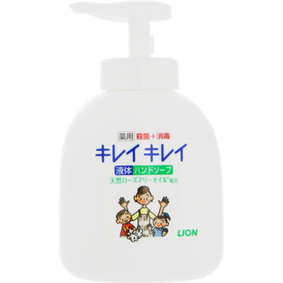

返回列表
产品名称：キレイキレイ 薬用液体ハンドソープ ポンプ

ライオン キレイキレイ 薬用液体ハンドソープ ポンプ ２５０ｍｌ（医薬部外品）
メーカー ライオン
JANコード 4903301176817
商品の特徴
薬用 殺菌＋消毒
天然ローズマリーオイル配合
- 成分・分量
- 【成分】
有効成分・・・イソプロピルメチルフェノール
その他の成分・・・グリセリン、ラウリン酸、ソルビット液、ミリスチン酸、水酸化K、アクリル酸アルキル共重合体エマルション-2、モノエタノールアミン、ポリスチレンエマルション、香料、EDTA、安息香酸塩
- 用法及び用量
- 水またはぬるま湯で泡立てて洗い、その後よくすすぐ